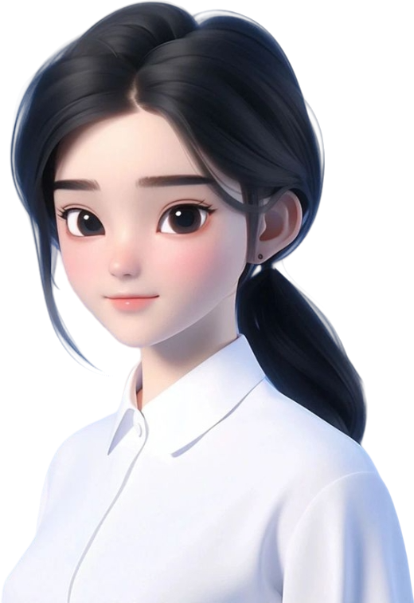

证件照编辑器
前置步骤：
1、抠图1:
- 上传: https://aiart.chuangkit.com/editor/koutu?fmodule=tool_box&fpage=home
- 抠图结果: blob:https://mater.chuangkit.com/xxxx
- 上传: https://cutout.designkit.com/?channel=kllbd141&bd_vid=9549066288582911630
- 抠图结果: 纯色栏 blob:https://cutout.designkit.com/xxxx
2、无损放大: https://www.designkit.com/upscale/
请上传【透明背景】的底图, 图片尺寸尽量大于【898,1181】, 至少大于目标证件尺寸
上传文件：
证件类型：
小一寸
一寸
大一寸
小二寸
二寸
大二寸
三寸
四寸
社保卡
驾驶证
证件背景：
红色背景
蓝色背景
白色背景
图片类型：
PNG
JPG
图片质量：
1.0
0.99
0.9
0.8
0.7
0.6
0.5
0.4
0.3
0.2
0.1
裁剪尺寸：
偏移尺寸：

cleanImage1
cleanImage2
cleanImage3